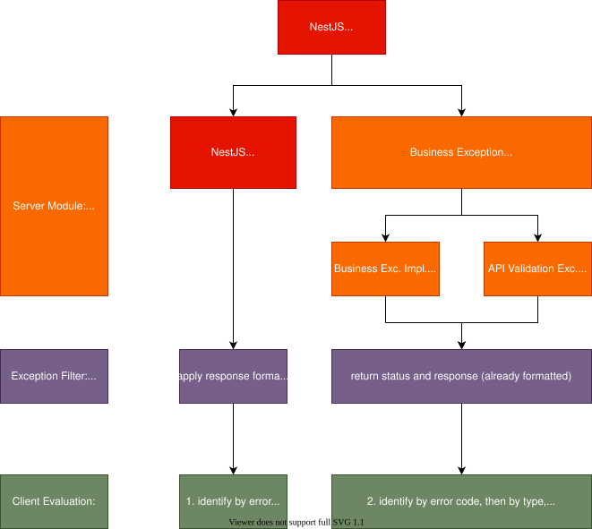

We separate our business exceptions from technical exceptions. While for technical exceptions, we use the predefined HTTPExceptions from NestJS, business exceptions inherit from abstract BusinessException.
By default, implementations of BusinessException must define
code: 500
type: "CUSTOM_ERROR_TYPE",
title: "Custom Error Type",
message: "Human readable details",
// additional: optionalDataThere is a GlobalErrorFilter provided to handle exceptions, which cares about the response format of exceptions and logging. It overrides the default NestJS APP_FILTER in the core/error-module.
In client applications, for technical errors, evaluate the http-error-code, then for business exceptions, the type can be used as identifier and additional data can be evaluated.
For business errors we use 409/conflict as default to clearly have all business errors with one error code identified.
Sample: For API validation errors, 400/Bad Request will be extended with
validationError: ValidationError[{ field: string, error: string }]and a custom typeAPI_VALIDATION_ERROR.
Pipes can be used as input validation. To get errors reported in the correct format, they can define a custom exception factory when they should produce api validation error or other exceptions, handled by clients.
cause propertyIf you catch an error and throw a new one, put the original error in the cause property of the new error. See example:
try {
someMethod();
} catch(error) {
throw new ForbiddenException('some message', { cause: error });
}If you want the error log to contain more information than just the exception message, use or create an exception which implements the Loggable interface. Don't put data directly in the exception message!
A loggable exception should extend the respective Built-in HTTP exception from NestJS. For the name just put in "Loggable" before the word "Exception", e.g. "BadRequestLoggableException". Except for logging a loggable exception behaves like any other exception, specifically the error response is not affected by this.
See example below.
export class UnauthorizedLoggableException extends UnauthorizedException implements Loggable {
constructor(private readonly username: string, private readonly systemId?: string) {
super();
}
getLogMessage(): ErrorLogMessage {
const message = {
type: 'UNAUTHORIZED_EXCEPTION',
stack: this.stack,
data: {
userName: this.username,
systemId: this.systemId,
},
};
return message;
}
}export class YourService {
public sampleServiceMethod(username, systemId) {
throw new UnauthorizedLoggableException(username, systemId);
}
}